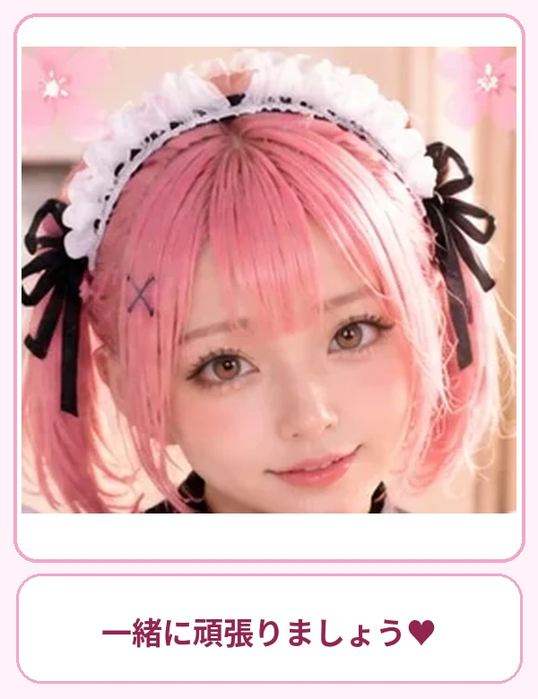
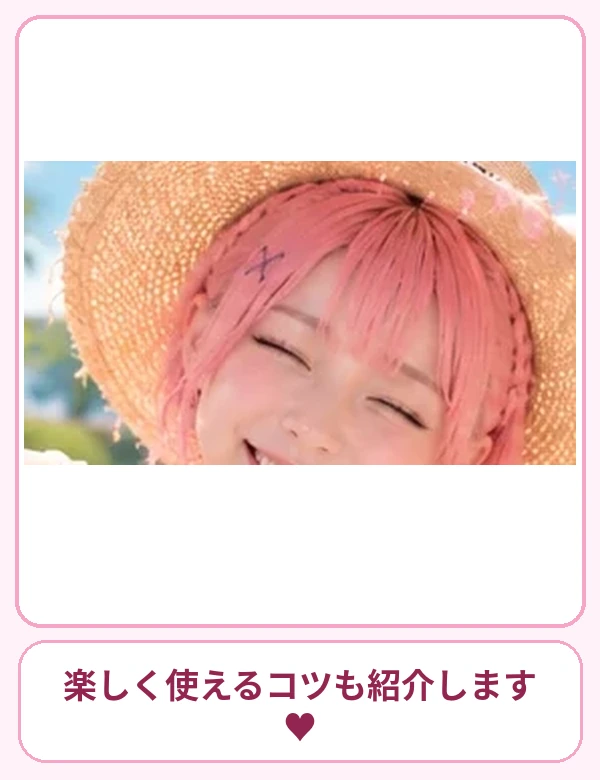
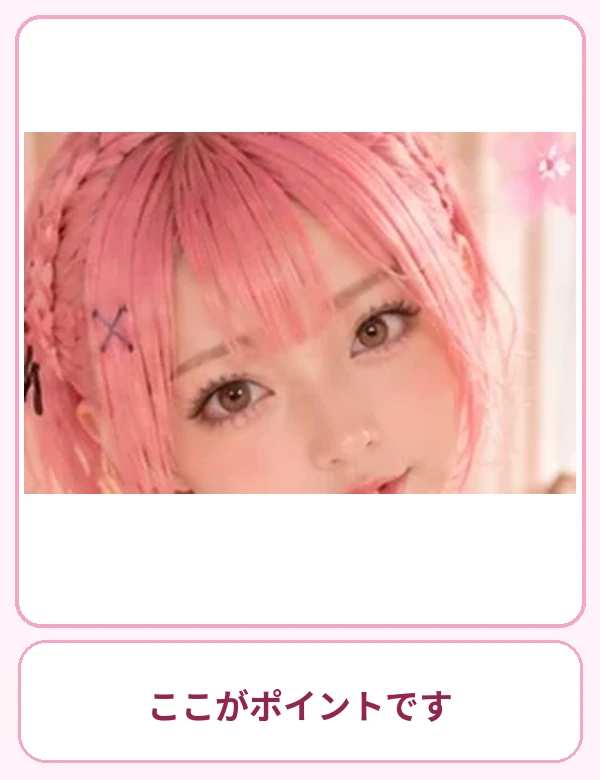
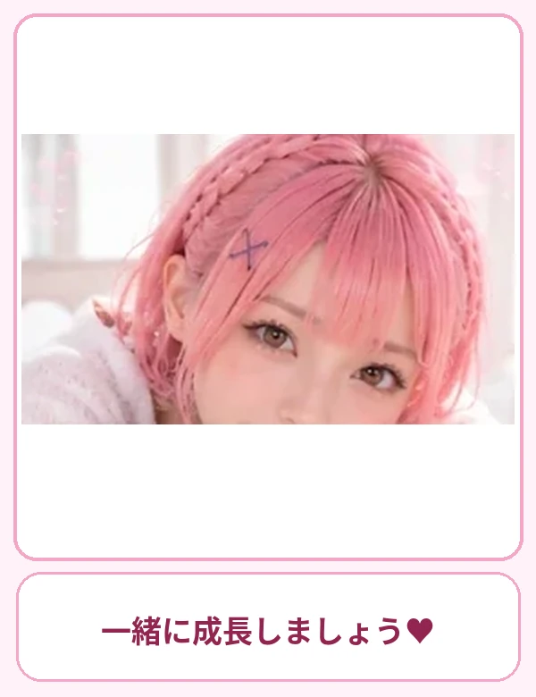
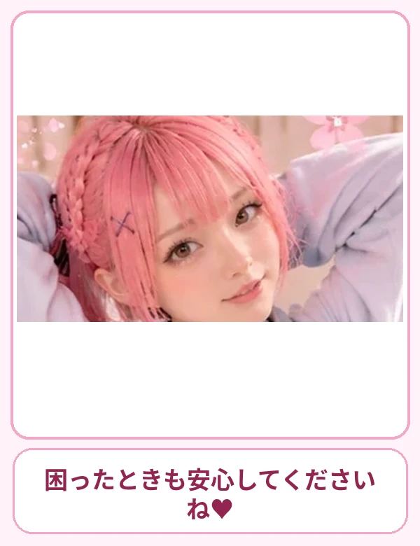

一緒にやってみましょう♡
STEP 01
最新情報を調べる
ルナ先生からの解説 🌸 ニュース、価格、制度など変わる情報はWeb検索を使い、公開日と一次情報を確認しましょう。
🖱️ 操作の手順
- 質問に「最新情報を検索して」と明記します。
- 情報の対象地域と日付を指定します。
- 回答に出典リンクを付けてもらいます。
- 公式サイトと照らし合わせます。
📋 そのまま使える質問文
日本の生成AIに関する最新ニュースを3件、日付・要点・出典URL付きでまとめてください。
ここがポイントです♡
STEP 02
複数の候補を比較
ルナ先生からの解説 🌸 製品やサービスは、比較する軸を先に決めると選びやすくなります。
🖱️ 操作の手順
- 比較対象を2〜5個決めます。
- 価格・機能・難易度など比較項目を指定します。
- 比較表にしてもらいます。
- 不明な情報は「不明」と記載させます。
📋 そのまま使える質問文
初心者向けの無料クラウドストレージを3つ、容量・特徴・注意点で比較表にしてください。

ゆっくり進めてね♡
STEP 03
情報の信頼性を確認
ルナ先生からの解説 🌸 AIの回答には誤りが混じることがあります。数字や引用は元資料まで確認します。
🖱️ 操作の手順
- 出典があるか確認します。
- 公的機関や提供元の一次情報を優先します。
- 古い記事を最新の事実として扱わないようにします。
- 判断が難しい場合は不確かな点を列挙してもらいます。
📋 そのまま使える質問文
この情報について、確認済みの事実と未確認の内容を分けて説明してください。

便利な使い方です♡
STEP 04
株式・FXの分析
ルナ先生からの解説 🌸 チャートや経済指標の分析では、データの時刻・出典・取得可否を明確にします。将来の価格は保証されません。
🖱️ 操作の手順
- 対象銘柄・通貨ペア・時間軸を指定します。
- 価格データの取得時刻と出典を確認します。
- 上昇・下落の両シナリオを比較します。
- 損失リスクと不確実性を確認します。
📋 そのまま使える質問文
EUR/USDについて、公開情報で確認できる事実と仮説を分け、上昇・下落シナリオを整理してください。